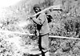
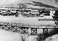
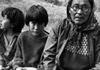
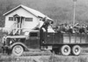
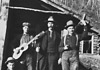
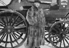
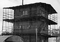
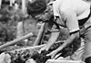
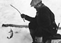
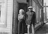

This exhibit provides an intimate look at the lives of Yukoners over the past one hundred years. Focusing on photographs, maps, and oral histories from the holdings of Yukon Archives, the exhibit depicts the stories of Yukon First Nations and non-First Nations people.
Home Pagesite language selection
English Main PageEnglish language version
French Main PageFrench language version
Yukon Archives copyrightcontact and site © information
Storytelling: Crow Story view this panel
Storytelling is a highly developed part of the Yukon First Nations cultural heritage.
Kwäday Kwädän: Long Ago People view this panel
Yukon First Nations’ social groups and clan systems ensured that sharing resources and helping each other were essential values and these beliefs are still part of life today.
Newcomersview this panel
The first newcomers started arriving in the Yukon in the mid-1850s and the population has continued to change and diversify to the present day.
Transportation and Communication view this panel
New methods of transportation and the resulting improvements to communication links have brought major change to Yukon.
Where we lived view this panel
Settlements and communities adapt and move as transportation routes develop.
Relationships and Family view this panel
Relationships are all important in small and remote areas.
Blessed is the spot view this panel
Yukon is home to people with a wide variety of religious faiths.
Jobs, careers and tradesview this panel
The 20th century brought job opportunities for many as they adapted their traditional skills to the new market economy.
Good prospectsview this panel
Mining has been part of Yukon life for more than 100 years and continues to be important to the economy.
Arts, crafts and cultureview this panel
The Yukon has always had a rich cultural life from the First Nations' traditions of dancing, singing and storytelling to the writers, painters, musicians, dancers and sculptors who enrich the Territory today.
Old style words are just like schoolview this panel
Education in the Yukon has been carried out in a variety of ways, from the teaching of traditional knowledge at home and on the land, to formal schooling.
Where one likes to beview this panel
Over the years a variety of shelters and structures have been used to protect people from the weather.
The Yukon, Our Homeview this panel
Yukon people have worked together to create the vibrant community it is today.
Who we were; who we areview this panel
Yukon’s population has undergone a great deal of change over the years.
Living on the landview this panel
Yukon has a challenging geography and climate and people have had to be resourceful and skillful to survive.
A lot of funview this panel
Yukon people have always used creativity to find ways to fill their leisure time.
The dignity of a districtview this panel
Yukon’s political and governmental systems have developed and changed over the years.